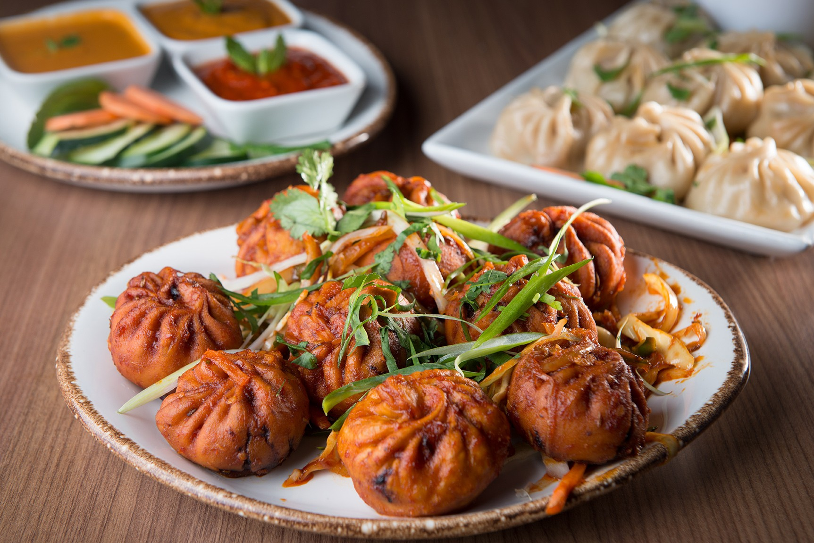
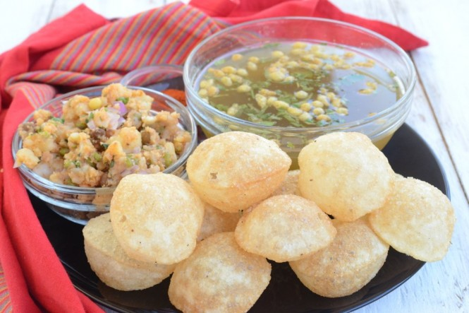

ネパールの最高ダイニング
MISTRO屋
Cooking and feeding other is the best thing in the world.
Seeing smiles in our customer faces are our main motto.
We WELCOME you to the the most ancient NEWA Food Restautant.
MISTRO屋の紹介
以下の三つはメインになっております
モモ(MOMO)
MOMOとはネパール式の餃子のことで、ネパールではかなり人気の名物料理です。当店のMOMOは「チキンMOMO」で、チキン・玉ねぎ・にんにく・コリアンダーを具材にカレー風味に仕上げた一品です。焼かずに蒸して調理しますので、餃子のような小籠包のような味わいです。 チキンのほかの具材としては「Veg」と「Buff」があります。「Veg」はすなわち野菜餃子です。「Buff」はバッファロー、水牛の肉です。ヒンドゥー教徒が多いネパールでは、牛（Bull）は神様の眷族とされ、食肉の対象となりませんが、水牛ならば食べても良いとされています。
国民食「ダルバート」
ネパール語でカナ（食事）といえば、ダルバートのこと。朝と晩、1日2食が基 本です。1日2食と聞くと少ないと感じるかもしれませんが、実はカジャ（軽食）も食べます。ダルバートは「カナ」と呼び、それ以外の軽食は「カジャ」と呼ばれています。ダルバートとはワンプレートに盛り付けされたネパールの定食。中身はダル（豆のスープ）、バート（ご飯）、 タルカリ（野菜のおかず）、アチャール（漬物）、ダヒ（ヨーグルト）、サーグ（青菜の炒め物）、ギウ（精製バター）、ジョール（カレーやスープ）、肉料理（鶏肉、マトン、ヤギ肉）です。
グラブジャムン
「グラブジャムン（Gulab Jamun）」は、〝世界一甘いお菓子〟として知られる、ネパール発祥のボール状のお菓子。伝統的な製法ではコア（ネパールの濃縮乳）が使用されますが、現代では代わりに粉ミルクが使われるのが一般的です。 世界一甘いお菓子〟ですから、比較的薄い味つけを好む日本人には需要が少なそう…。とはいえ、〝世界一〟ですから死ぬまでに一度は口にしてみたいですよね。
前菜食のご紹介
人気なネパール料理をご紹介いたします
サデコモモ
サデコモモ
パニプリ
パニプリ
チャットパト

チャットパト
BISTRO屋のダイニング
お店の中央には大きな暖炉があり、冬はほっと心が温まる空間をつくりだしています。薄暗い照明と、モダンな雰囲気のインテリアは大人なムードを演出しています。
ダイニング
デートにもファミリーにもぴったりのレストランです。感染対策のパーテーションもとても重厚な作りで半個室のような雰囲気の中、リラックスしてお食事することが出来ます。 旬を活かしたシーフードを提供する「フィッシュバンクトーキョー」。フレンチをベースにしながらもカテゴリーの枠に捉われず、様々なディティールを融合し、現代的タッチで四季折々表現。 シェフが世界各国から厳選した新鮮な魚介類をフレンチ、イタリアン、地中海料理などの技法を駆使し、モダンテイストで提供するこれまでにない,ネパール料理を心ゆくまでお楽しみください。
タカリご飯
こちらは、人気のネパールTHAKALI料理です。GHEEからたっぷりとかかっている魅惑の料理です。 一口食べると、カレーの香ばしさが口いっぱいに広がります。それでいて意外とくどくないのも魅力で、リピーターも多いお店です. ネパールと聞いて思い浮かべる料理は、スパイシーなカレーやナンという方が多いのではないでしょうか。 日本ではインド・ネパール料理店はあっても、ネパール料理専門店は数が少ないです。 そのため、スパイシーな味付けというイメージが強いネパール料理ですが、実は本来は日本人の口にも良く合う丁度良い辛さの料理が多いんですよ。 今回は現地で味わってほしいおすすめのネパール料理をサラダ、スープ・カレー、肉料理、主食、軽食、デザートに分けてご紹介します。

宴会場
国際会議や周年記念パーティー、展示会にご利用いただける大規模な宴会場から、二次会や朝食会など中小規模な広さの会場もございます。 着席PARTYは４名様〜220名様まで個室にて可能です。 １テーブル６名前後でお座り頂ける大きさの卓でございます。 １テーブルに対し１種類のお料理を１ 皿の大き目のお皿にてご提供します。 例えば７品コースの場合は７皿の大き目のお皿に乗ったお料理が用意され コース料理としてサーブできるよう数十枚の銘々皿 もご用意いたします。 又、24名様〜220名様用の各個室室内には、１メートル20センチ幅の通路もご用意しておりますので 着席でありながらも立食PARTYと遜色のない空間の利用が可能で個室内の席移動ができます。
お客様の評価
お客様からいただいてますお店レビューです。

ランチの時間に行きました。土曜日でもランチやってました。価格がリーズナブルでとてもお腹いっぱいになりました。 ナンが想像以上の大きでした.
Janak Neupane

Thakaliセットが一番美味しかったですよ。ぜひぜひ、次回もMISTRO屋にしたいと思っております。 美味しい料理頂いてありがとうございます。
Puspa Shakya

言うほどもなくすごっくおいしかったです。初めて行ってきましたがネパールのカレーは一番美味しいと 感じました。毎週この店にします。
Rahul Suwal

家族8人で行ってきました。セットはすごっく良いと感じましたまた、従業員さんの程度やサービスも良いと思いました。 大人数で行きましたので１０％割引頂きました。
Manas Raya
テークアウトと配達も可能
NIPPON
CONTACT US
Chirayu Hora